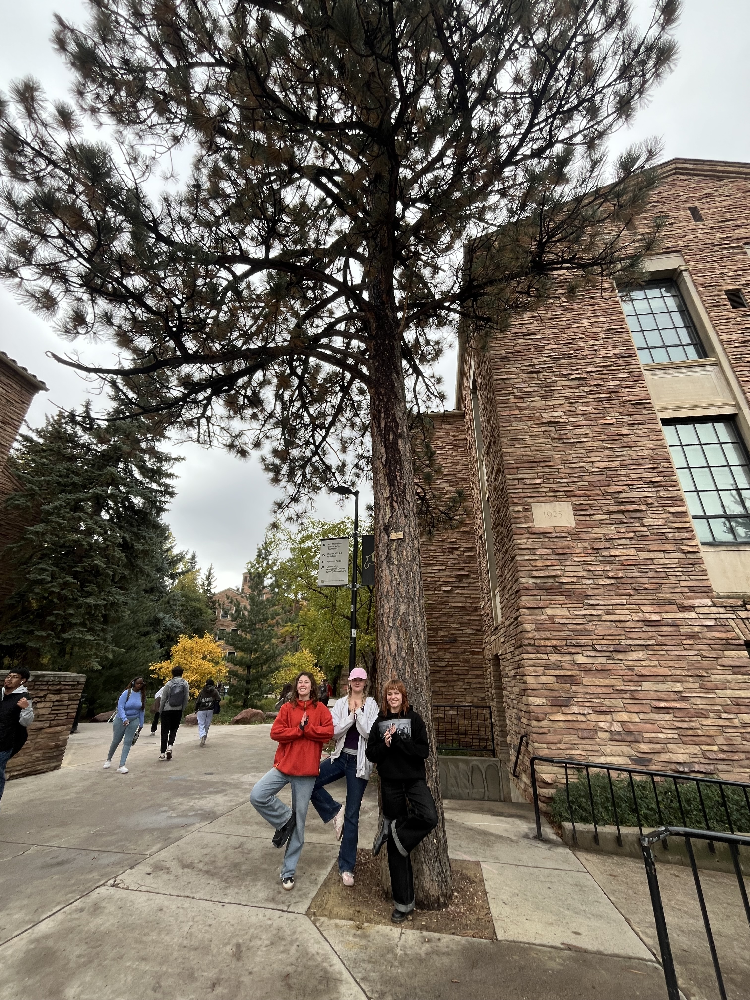

October 26, 2026
#9 American Elm

I liked this tree, it was large and had lots of leaves.
American elms were historically planted along streets
across America because of their large, shady canopies.
Unfortunately, many were killed by Dutch elm disease.
They are not native to Colorado, but grow here.
American elm is a hardwood and has been used for
furniture, flooring, and even boats because its wood
is tough and resists splitting. It also holds up
pretty well when wet.
#21 Chestnut Oak

This one was also a very nice tree. Its thick, dark
gray bark contains a lot of tannins, which were
historically used for tanning leather. Chestnut oak
is native to the eastern United States, not Colorado.
It is a hardwood and has been used for railroad ties,
flooring, and furniture because it is strong and
durable. It was also named Urban Tree of the Year
in 2017.
#51 Ponderosa Pine

This one was very skinny and tall. If you put your
nose right up to the bark, it smells like vanilla
or butterscotch, which I thought was really cool.
Ponderosa pine is native to Colorado and has
historically been an important source of lumber
throughout the western United States. It is a
softwood and is commonly used for framing, doors,
windows, and furniture because it is relatively
lightweight and easy to work with. These trees
are also really good at surviving wildfires
because of their thick bark.
#36 Silver Maple

This was my favorite of the trees we saw today.
The leaves were very nice and pretty. Silver maples
are native to eastern and central North America,
but not Colorado. They were historically planted
in cities because they grow quickly and provide
lots of shade. Silver maple is technically a
hardwood, although its wood is softer than many
other maples. It can be used for furniture,
cabinets, and interior woodwork, but it is not
usually used for structural building because
the wood is relatively weak. They are also
some of the first trees to flower in spring.